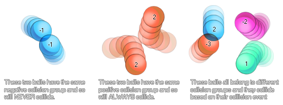

physics_fixture_set_collision_group(fixture, group)
| Argumento | Descripción |
|---|---|
| fixture | el accesorio que se va a atar |
| group | el grupo al que está asignado este accesorio (ya sea un valor positivo, 0 o un valor negativo) |
Devoluciones: N / A
Una vez que haya creado su accesorio, puede definirlo como parte de un grupo de colisión. Esto significa que puede indicar a instancias con ese dispositivo que siempre colisionen o que nunca colisionen con otra instancia que tenga elementos fijos vinculados a ellos con el mismo grupo de colisión. Los valores que se pueden asignar se basan en números positivos o negativos, siendo 0 el valor predeterminado (lo que significa que la instancia con esta configuración de dispositivo se ignora a menos que se cree un evento de colisión para ella). Aquí hay una imagen para ayudar a explicar:

Como puede ver, configurar grupos de colisión puede ser muy útil para crear cuerpos físicos complejos que interactúan con el mundo físico que los rodea, pero no entre sí. Sin embargo, debe tenerse en cuenta que, debido a la complejidad del cálculo de las colisiones basadas en grupos como este, se recomienda que intente mantener el número de grupos en uso en cualquier sala al mínimo absoluto.
physics_fixture_set_collision_group(fix_Wheel, -1);
El código anterior configurará el dispositivo indexado en la variable "fix_Wheel" para que forme parte del grupo "-1".